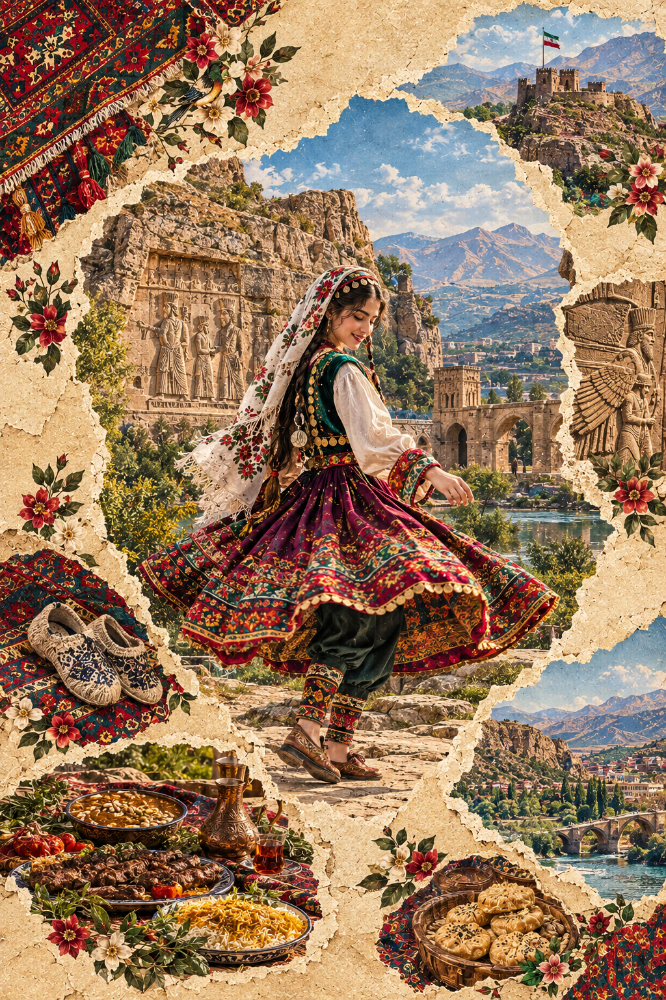
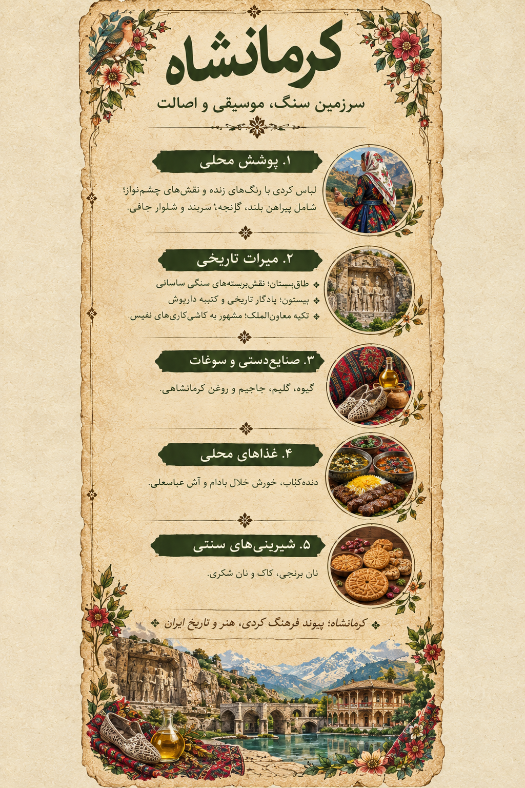

ایران، هزار رنگ | روایت تصویری پوشش زنان ایران
Iran, A Thousand Colors | A visual story of women's dress in Iran
کرمانشاه؛ سرزمین سنگ، موسیقی و اصالت
Kermanshah: A Land of Stone, Music and Heritage
«کرمانشاه؛ آواز کوهستان، رنگِ زندگی»
“Kermanshah: Mountain Songs, Colors of Life”
سفری تصویری میان پوشش رنگارنگ زنان، آثار باستانی، روستاهای کوهستانی، نواهای محلی و طعمهای ماندگار کرمانشاه
A visual journey through colorful women's dress, ancient monuments, mountain villages, local music, and the memorable flavors of Kermanshah.
۱. تصویر کرمانشاه؛ روایت یک سرزمین
1. Kermanshah in Art: A Land's Story
در این اثر، پوشش رنگارنگ زن کُرد در کنار کوهستان، نقشبرجستههای باستانی، معماری تاریخی، گیوه و خوراکهای محلی قرار گرفته است. کلاژ، پیوند میان طبیعت زاگرس، حافظه تاریخی و زندگی فرهنگی مردم کرمانشاه را روایت میکند.
This artwork places colorful Kurdish women's dress alongside the Zagros mountains, ancient reliefs, historic architecture, traditional footwear, and local food.

اثر تصویری کرمانشاه از مجموعه «ایران، هزار رنگ»
The Kermanshah artwork from “Iran, A Thousand Colors”
از نقش سنگهای باستانی تا رنگ دامنهای محلی و نوای تنبور، کرمانشاه سرزمینی است که تاریخ و زندگی در آن کنار هم جریان دارند.
From ancient stone reliefs to colorful local skirts and the sound of the tanbur, Kermanshah brings history and everyday life together.

لیبل اختصاصی کرمانشاه؛ راهنمای تصویری پوشش، میراث تاریخی، صنایعدستی و خوراک محلی
Kermanshah exhibition label: a visual guide to dress, heritage, crafts, and local food
۲. پوشش زنان کرمانشاه؛ رنگهایی از طبیعت زاگرس
2. Women's Dress in Kermanshah: Colors of the Zagros
پوشش سنتی زنان کرمانشاه در مناطق مختلف یکسان نیست و نام لباسها و شیوه استفاده از آنها میتواند تفاوت داشته باشد. در گزارش همشهری آنلاین، اجزایی مانند سربند، زیرپیراهن، پیراهن، جلیقه، نیمتنه، قبا، روپوش، شلوار و کفش معرفی شدهاند. پارچههای رنگارنگ، مخمل و ساتن و آرایههای سکهای یا فلزی در برخی نمونههای پوشش محلی دیده میشوند.
Traditional women's dress in Kermanshah varies across towns and communities. A Hamshahri Online report describes head coverings, undershirts, dresses, vests, jackets, outer robes, trousers, and footwear. Some local garments feature vivid fabrics, velvet or satin, and metallic ornaments.
کراس، کُرواس، شِو و شُویKeras, Korvas, Shev and Shov
این نامها در گزارش پوشاک زنان کرمانشاه بهعنوان صورتهای محلی نام لباس در برخی نواحی ثبت شدهاند. کاربرد دقیق آنها ممکن است با محل و گویش تفاوت داشته باشد.
These names are recorded as local garment terms in some areas. Their exact use may vary by place and dialect.
کلنجه، سخمه و جلیزقهKalanjeh, Sakhmeh and Jalzeqeh
کلنجه و نامهای نزدیک به آن برای پوششهایی مانند جلیقه یا نیمتنه در برخی روایتهای محلی به کار میروند. در نمونههایی از هورامان، نامهایی چون جلیزقه و سخمه نیز ذکر شدهاند.
Kalanjeh and related terms refer in some local accounts to vests or fitted jackets. Descriptions of Hawraman also mention jalzeqeh and sakhmeh.
سربند و روسریهای محلیLocal Head Coverings and Scarves
در گزارش همشهری از نامهایی مانند گلونی، سرون و کت یاد شده است. نام و شکل سربندها میتواند میان نواحی مختلف تفاوت داشته باشد.
The report mentions local head-covering names such as golvani, sarvan, and kat. Names and styles may differ across areas.
شلوار جافیJafi Trousers
شلوار جافی در برخی روایتها از پوشاک زنان روستایی، بهویژه هنگام کار، معرفی شده است. شکل و ترکیب آن با دیگر اجزای لباس ممکن است در مناطق مختلف تفاوت داشته باشد.
Jafi trousers are described in some accounts as clothing worn by rural women, particularly for work. Their style may vary by area.
گیوه و کلاشGiveh and Kalash Footwear
گیوه و کلاش از انواع کفشهای دستساز شناختهشده در بخشهایی از غرب ایراناند. در نواحی هورامان و پیرامون شاهو، مهارت ساخت و بافت کفش بخشی از میراث صنایعدستی منطقه است.
Giveh and kalash are handmade footwear traditions in western Iran. Around Hawraman and Mount Shahu, footwear-making is part of the region's craft heritage.
رنگ و آرایهColor and Ornament
دامنهای چیندار، پارچههای رنگین، جلیقههای تزئینشده و سربندهای نقشدار در برخی نمونههای لباس محلی دیده میشوند. هیچ ترکیب رنگ یا لباسی بهتنهایی نماینده همه زنان استان نیست.
Pleated skirts, vivid fabrics, decorated vests, and patterned head coverings appear in some examples of local dress. No single outfit represents all women in the province.
یادداشت پژوهشی: نامها و توصیفهای پوشاک بر پایه گزارش منتشرشده درباره لباس زنان کرمانشاه تنظیم شدهاند؛ تنوع محلی مهم است.
Research note: Clothing terms are based on a published report about women's dress in Kermanshah. Local diversity matters.
۳. روستاها و نواحی؛ هر منطقه، روایتی مستقل
3. Villages and Areas: Each Place Has Its Own Story
استان کرمانشاه مجموعهای از دشتها، درهها، کوهستانها و نواحی فرهنگی گوناگون است. نامهای زیر برای معرفی جغرافیای استان آمدهاند؛ برای نسبت دادن لباس یا رسم خاص به هر روستا، به منبع محلی جداگانه نیاز است.
Kermanshah Province includes plains, valleys, mountains, and diverse cultural areas. Attributing a specific garment or custom to an individual village requires a separate local source.
پاوه و نواحی هورامانPaveh and Hawraman
منطقهای کوهستانی با روستاهای پلکانی، معماری سازگار با شیب کوه و سنتهای فرهنگی شناختهشده. هجیج، نودشه و نوسود از نامهای قابل بررسی برای روایت زندگی روستایی این ناحیهاند.
A mountainous area known for stepped villages, distinctive architecture, and cultural traditions. Hajij, Nowdesheh, and Nowsud are places to explore.
جوانرودJavanrud
از نواحی کردنشین استان که بازار، زندگی شهری و پیوند با روستاهای اطراف بخشی از هویت معاصر آن است. برای معرفی پوشش زنان این منطقه، تصاویر مستند و روایتهای محلی اهمیت دارند.
A Kurdish-majority area where markets, town life, and nearby villages shape contemporary identity. Documented photographs and local accounts help present women's dress here.
روانسرRavansar
روانسر با چشماندازهای طبیعی و چشمهها شناخته میشود و میتواند در روایت پیوند زندگی روزمره با منابع آب و دشتهای منطقه جای بگیرد.
Ravansar is known for its natural scenery and springs, connecting everyday life with water and surrounding plains.
ثلاث باباجانیSalas-e Babajani
ناحیهای در غرب استان با روستاها و چشماندازهای کوهستانی. جزئیات فرهنگی هر روستا باید با منابع معتبر محلی تطبیق داده شوند.
A western area of the province with mountain villages. Cultural details for individual villages should be checked against reliable local sources.
سرپلذهاب و قصرشیرینSarpol-e Zahab and Qasr-e Shirin
این نواحی غربی استان دارای میراث تاریخی و اقلیم متفاوتی نسبت به بخشهای مرتفعترند. سنگنگاره آنوبانینی در نزدیکی سرپلذهاب از آثار باستانی شاخص این محدوده است.
These western areas have historic heritage and a different climate from higher parts of the province. The Anubanini rock relief near Sarpol-e Zahab is a notable monument.
شهرستان کرمانشاه و روستاهای پیرامونKermanshah County and Surrounding Villages
فهرست روستاهای شهرستان کرمانشاه نقطه شروع بررسی نام آبادیهاست. انتخاب روستاهای نهایی برای گالری باید بر اساس شواهد درباره پوشش، صنایعدستی یا آیینهای محلی انجام شود.
The county's village list is a starting point for checking settlement names. Final selections should be based on evidence about dress, crafts, or local traditions.
۴. تاریخ و طبیعت؛ از سنگنگاره تا چشمه
4. History and Nature: From Rock Reliefs to Springs
طاقبستانTaq-e Bostan
مجموعهای از سنگنگارهها و ایوانهای سنگی دوره ساسانی در شمالشرقی شهر کرمانشاه که صحنههایی از پادشاهی و آیینهای درباری را به نمایش میگذارد.
A complex of Sasanian rock reliefs and stone iwans northeast of Kermanshah, depicting royal scenes and ceremonies.
بیستونBisotun
محوطهای تاریخی با کتیبه و نقشبرجسته داریوش بزرگ و آثار دورههای مختلف. کتیبه بیستون از مهمترین اسناد شناختهشده دوره هخامنشی است.
A historic site with the inscription and relief of Darius the Great. The Bisotun inscription is a major surviving record of the Achaemenid era.
تکیه معاونالملکMoaven al-Molk Tekyeh
بنایی تاریخی در شهر کرمانشاه که به کاشیکاریهای رنگین و صحنههای تصویری آن شناخته میشود؛ نمونهای برجسته از هنر تزئینی دوره قاجار.
A historic building known for colorful tilework and figurative scenes, representing Qajar-era decorative art.
تکیه بیگلربیگیBiglarbegi Tekyeh
از بناهای تاریخی شهر با تزئینات آینهکاری و معماری دوره قاجار که بخشی از حافظه آیینی و شهری کرمانشاه را بازتاب میدهد.
A historic Qajar-era building featuring mirrorwork and architecture that reflects Kermanshah's urban and ritual heritage.
معبد آناهیتا در کنگاورAnahita Temple in Kangavar
محوطهای باستانی با بقایای معماری سنگی در کنگاور که از آثار مهم تاریخی شرق استان به شمار میرود.
An archaeological site with stone architectural remains in Kangavar, among the major historic sites in eastern Kermanshah Province.
طبیعت؛ قوریقلعه، هشیلان و سرآب نیلوفرNature: Quri Qaleh, Hashilan and Sarab-e Niloufar
غار قوریقلعه، تالاب هشیلان و سرآب نیلوفر از جاذبههای طبیعی شناختهشده استاناند. چشمهها، تالابها و چشماندازهای کوهستانی در زندگی محلی نقش دارند.
Quri Qaleh Cave, Hashilan Wetland, and Sarab-e Niloufar are known natural attractions. Springs, wetlands, and mountain landscapes shape local life.
۵. خوراک محلی؛ طعمهای بهیادماندنی کرمانشاه
5. Local Food: Memorable Flavors of Kermanshah
دندهکبابDandeh Kebab
از خوراکهای مشهور کرمانشاه که با دنده بره و شیوه پخت ویژه شناخته میشود و در معرفی خوراک شهری استان جایگاه مهمی دارد.
A well-known Kermanshah dish prepared with lamb ribs and a distinctive cooking method.
خورش خلالKhoresht-e Khelal
خورشی مجلسی که با خلال بادام و زعفران شناخته میشود و در مهمانیها و سفرههای رسمی کرمانشاه حضور دارد.
A festive stew known for slivered almonds and saffron, served at gatherings in Kermanshah.
آش عباسعلیAsh-e Abbasali
آشی غلیظ و مقوی که از خوراکهای شناختهشده شهر کرمانشاه است و در روایتهای محلی با نذر و سنتهای غذایی نیز پیوند دارد.
A hearty soup known in Kermanshah and associated in some local accounts with food traditions and vows.
آش سورانهAsh-e Suraneh
خوراکی محلی که با گیاه سورانه در فصل آن تهیه میشود. مواد اولیه و شیوه پخت میتواند از خانوادهای به خانواده دیگر تفاوت داشته باشد.
A local dish prepared with suraneh greens in season. Ingredients and methods can vary between families.
سیبپلو و ونوشکپلوSib-Polo and Venushak-Polo
از غذاهای برنجی منطقه که با مواد و چاشنیهای محلی تهیه میشوند. دستور پخت آنها ممکن است در خانوادههای مختلف کمی تفاوت داشته باشد.
Local rice dishes prepared with regional ingredients and seasonings. Recipes may vary between families.
کوفته شیرینSweet Koofteh
کوفته شیرین از خوراکهای متفاوت و شناختهشده کرمانشاه است. آشها، خوراکهای فصلی و غذاهای خانگی نیز بخشی از تنوع آشپزی منطقهاند.
Sweet koofteh is a distinctive Kermanshah dish. Soups, seasonal foods, and home-cooked meals are also part of the region's culinary variety.
۶. شیرینی، سوغات و صنایعدستی
6. Sweets, Souvenirs and Handicrafts
نان برنجیNan-e Berenji
از معروفترین شیرینیهای کرمانشاه، تهیهشده با آرد برنج و عطر دلپذیر؛ معمولاً با نقشهای قالبی روی سطح آن شناخته میشود.
One of Kermanshah's best-known sweets, made with rice flour and often marked with decorative impressions.
کاکKak
شیرینی لایهای و نازک که بافت ترد آن از ویژگیهای اصلیاش است و در فهرست سوغات محبوب کرمانشاه قرار دارد.
A thin, layered pastry with a crisp texture, popular among Kermanshah souvenirs.
نان خرمایی و بژیDate Bread and Bizhi
نان خرمایی و بژی از شیرینیها و نانهای محلی معرفیشده در منابع گردشگری استاناند. دستورها ممکن است در نانواییها و خانوادهها متفاوت باشد.
Date bread and bizhi are local baked treats listed in tourism sources. Recipes may vary.
روغن حیوانی کرمانشاهیKermanshahi Animal Ghee
روغن حیوانی از محصولات شناختهشده استان است که در آشپزی محلی و بهعنوان سوغات عرضه میشود.
Animal ghee is a well-known regional product used in local cooking and sold as a souvenir.
گیوه و کلاش دستسازHandmade Giveh and Kalash
کفشهای دستساز با مهارتهای دوخت و بافت سنتی، از صنایعدستی مهم غرب ایراناند. طرح و روش ساخت میتواند با محل تولید تفاوت داشته باشد.
Handmade footwear created with traditional sewing and weaving skills is an important craft in western Iran.
جاجیم و بافتههای محلیJajim and Local Weavings
بافتههای سنتی و منسوجات محلی، در کنار دیگر محصولات دستساز، میتوانند در بخش سوغات معرفی شوند؛ برای معرفی هر محصول خاص، محل تولید باید مشخص شود.
Traditional weavings and local textiles can be introduced as souvenirs. Specific products should be linked to verified production locations.
۷. موسیقی و آیینها؛ صدای زاگرس
7. Music and Traditions: The Sound of the Zagros
تنبورTanbur
تنبور از سازهای مهم موسیقی عرفانی و آیینی در بخشهایی از غرب ایران است. منطقه گوران و برخی اجتماعات پیرامون آن با سنتهای تنبورنوازی شناخته میشوند.
The tanbur is an important instrument in mystical and ritual music in western Iran. The Guran area is known for tanbur traditions.
هوره و سیاهچمانهHura and Siah Chamanah
هوره و سیاهچمانه از شیوههای آوازی شناختهشده در برخی سنتهای موسیقایی مناطق کردنشیناند. شکل اجرا و کاربرد هر نوا به جامعه محلی و موقعیت آیینی وابسته است.
Hura and siah chamanah are vocal traditions known in some Kurdish musical communities. Their use depends on local context.
سازهای محلیLocal Instruments
در معرفی موسیقی منطقه، سازهایی مانند دوزله، شمشال، دهل، سرنا و دایره نیز مطرح میشوند. رواج هر ساز در نواحی مختلف یکسان نیست.
Instruments such as dozaleh, shomshal, dahol, sorna, and frame drum are mentioned in regional music accounts.
آواز و روایت شفاهیSong and Oral Tradition
نواهای محلی میتوانند با داستانگویی، آیینها، شادی، سوگواری و خاطره جمعی پیوند داشته باشند. برای ثبت هر سبک یا نام محلی، منابع تخصصی اهمیت دارند.
Local music may connect with storytelling, rituals, celebration, mourning, and collective memory.
یادداشت: مقاله سیویلیکا که فرستاده شد درباره رقصهای کردی و استان کردستان است؛ بنابراین برای توصیف رقص در کرمانشاه بهعنوان منبع مستقیم به آن استناد نکردهایم.
Note: The Civilica paper concerns Kurdish dance in Kurdistan Province, so it is not treated as a direct source for Kermanshah.
۸. منابع و مطالعه بیشتر
8. Sources and Further Reading
پیوندهای زیر برای مطالعه بیشتر و بررسی جزئیات فرهنگی، تاریخی و محلی گردآوری شدهاند.
The following links are provided for further reading and checking cultural, historical, and local details.
این منابع نقطه شروع پژوهشاند. برای نسبت دادن نوع پوشش یا رسم خاص به روستایی مشخص، منبع تخصصی یا تأیید محلی جداگانه لازم است.
These sources are starting points for research. Assigning a specific garment or custom to a particular village requires a specialized source or local confirmation.
← بازگشت به گالری «ایران، هزار رنگ»
← Back to the “Iran, A Thousand Colors” gallery